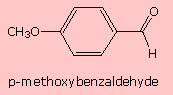

|

|
The structural formulas and names of ten different compounds will be displayed in turn in the colored area to the left. Each compound will appear for about five seconds before being replaced by another, and the display will cycle continuously. Click on the structure of your choice and you will be presented with a selection of reagents with which the chosen compound may be treated. Examine each reagent, and if you believe it will cause a chemical reaction, click on the entry box adjacent to that reagent. A check mark should appear, identifying your selection.
|
|---|